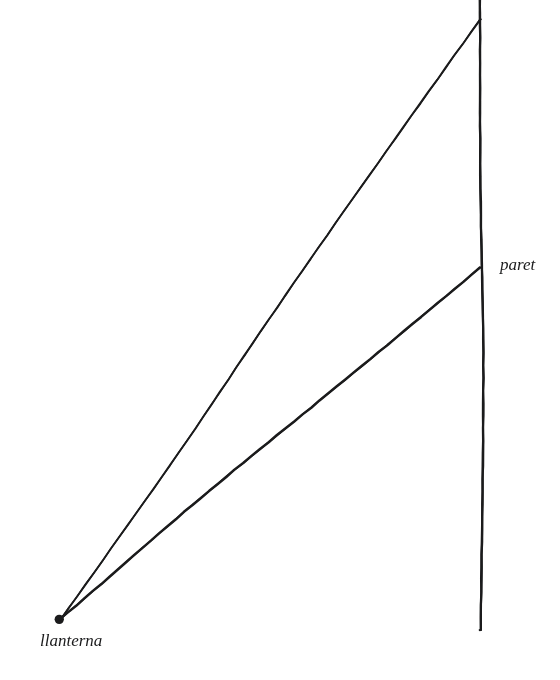
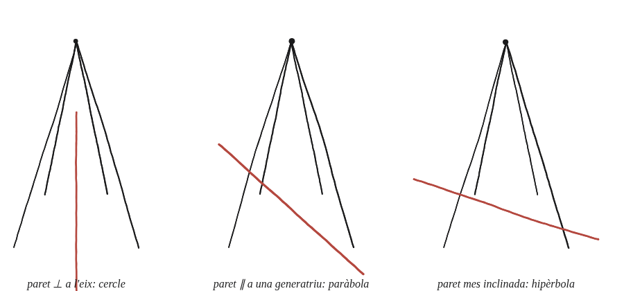

Il·lumina la paret amb una llanterna en diversos angles. Pots veure els tres tipus de secció cònica?

Què hem de produir
Cal descriure tres orientacions diferents de la llanterna (o, de manera equivalent, de la paret) que produeixin, cadascuna, una de les tres còniques: una el·lipse (o cercle), una paràbola, i una hipèrbola. El feix de llum de la llanterna és el con; la paret és el pla que el talla.
Comença perpendicular
El cas més senzill dels tres és quan la llanterna apunta exactament perpendicular a la paret: el feix, un con de llum, hi talla una taca circular, sense cap direcció privilegiada.
La construcció
Tres orientacions de la paret respecte del mateix con de llum: perpendicular a l'eix, inclinada però tallant només un costat del con, i inclinada encara més.

Tancar-ho
Perpendicular a l'eix: un cercle. Inclinant la paret fins que quedi paral·lela a una generatriu del con —la vora del feix de llum—: la taca es converteix en una paràbola, oberta per un sol costat. Inclinant-la encara més: la vora del feix es veu "obrir-se" cap als dos costats de manera característica d'una branca d'hipèrbola —tot i que aquí només hi ha un con, no un con doble.
Un sol con de llum, tallat per un pla en tres angles diferents, produeix les tres còniques: cercle amb el pla perpendicular a l'eix, paràbola quan el pla queda paral·lel a una generatriu del con, i hipèrbola quan s'inclina encara més.
Comprovació
Aquí la comprovació és observacional, no numèrica: amb la paret perpendicular a l'eix de la llanterna, el contorn de la taca manté la mateixa distància al centre en totes direccions —és un cercle de debò, no només una taca arrodonida a ull. Inclinant la paret fins que un costat del feix hi quedi paral·lel, el contorn deixa de tancar-se per aquell costat: aquest canvi de forma —de tancat a obert— es veu directament amb una llanterna i una paret real, sense necessitat de mesurar res.